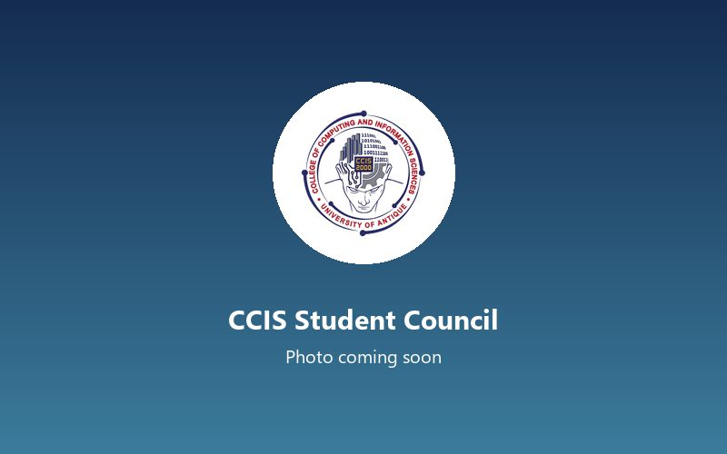
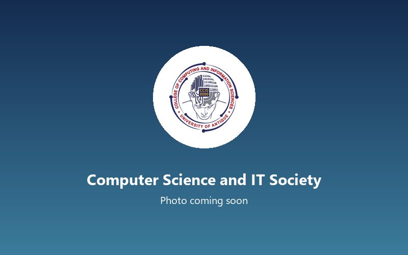
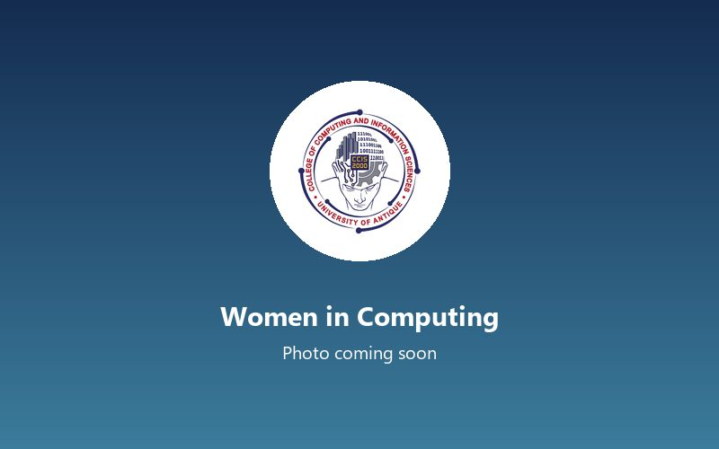

Mobile-Based Fish Catch Logging System for Small-Scale Fisherfolk in Tibiao, Antique
Q1 2026Completed
The College of Computing and Information Sciences educates computer scientists, IT professionals and information systems specialists who build software and digital services for schools, local governments and businesses in Antique.
May Lynn M. Farren, PhD-TMAssociate Dean, College of Computing and Information Sciences

Associate Dean, College of Computing and Information Sciences
Program Head, Bachelor of Science in Computer Science
Program Head, Bachelor of Science in Information Technology
Program Head, Bachelor of Science in Information Systems
Program heads and the core faculty of each program, with their academic rank.
Program Head, BSCS
Associate Professor II
Assistant Professor III
Assistant Professor I
Instructor III
Program Head, BSIT
Associate Professor II
Assistant Professor III
Assistant Professor I
Instructor III
Program Head, BSIS
Associate Professor II
Assistant Professor III
Assistant Professor I
Instructor III
Accreditation status, program educational objectives, and enrollment for the last three academic years.
[Program educational objectives for this program go here.]
Three to five years after graduation, the alumni of the Information Technology Program will:
[Program educational objectives for this program go here.]
| Program | A.Y. 2023–2024 | A.Y. 2024–2025 | A.Y. 2025–2026 | Change from last year |
|---|---|---|---|---|
| Bachelor of Science in Computer Science | 211 | 238 | 262 | +24 (+10.1%) |
| Bachelor of Science in Information Technology | 448 | 476 | 512 | +36 (+7.6%) |
| Bachelor of Science in Information Systems | 97 | 118 | 134 | +16 (+13.6%) |
| Total | 756 | 832 | 908 | +76 (+9.1%) |
Courses of each program based on the CHED policies, standards and guidelines. The official prospectus with year levels, semesters and units is available from the college.

Represents all computing students and leads college-wide activities

Coding workshops, tech talks and programming contests

Mentoring and outreach to encourage young women in technology
CCIS laboratories, 8:00 AM, 2026
CCIS laboratory 1, 8:00 AM, 2026
Campus audio-visual room, 9:00 AM, 2026